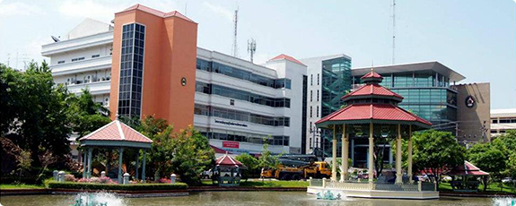

Smart Archetype University of the Society
มหาวิทยาลัยราชภัฎสวนสุนันทา เป็นมหาวิทยาลัยราชภัฎอันดับหนึ่ง เนื่องจากได้รับความนิยมมากที่สุดในบรรดามหาวิทยาลัยราชภัฎในกทม. เพราะมรจำนวนคนเลือกมาเป็นอันดับหนึ่งมากที่สุด เดิมบริเวณนี้เป็นส่วนหนึ่งของพระราขวังดุสิตได้รับพระราชทานนามจากพระบาทสมเด็จพระจุลจอมเกล้าเจ้าอยู่หัวว่า "สวนสุนันทา"
ตั้งอยู่เลขที่ 1 ถนนอู่ทองนอก
แขวงดุสิต เขตดุสิต กรุงเทพมหานคร 10300
เบอร์โทรศัพท์ 02-160-1023
โทรสาร 02-160-1010
ปรับปรุง ณ วันที่